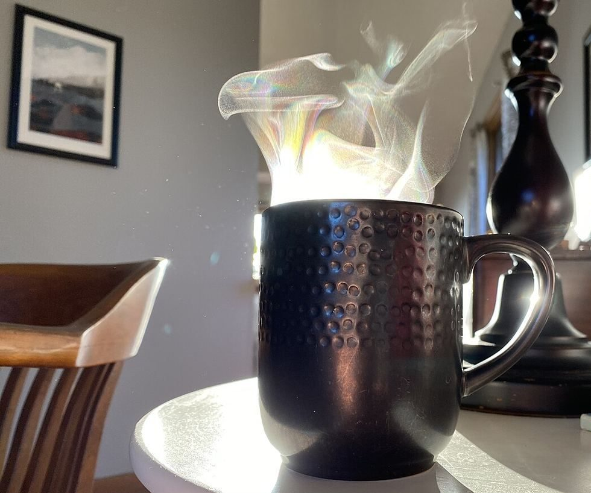
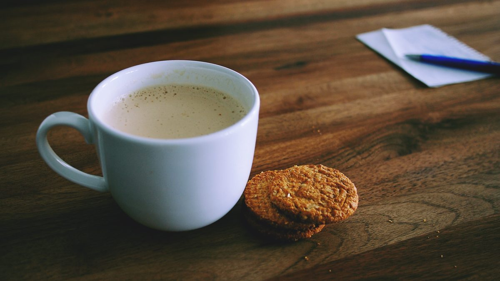

ABOUT
店のこと
確認できているのは所在地とInstagramのみです。そのほかの内容は、お店からご提供いただいてから掲載します。
このサイトの作り方
一台の道具を、部位に分ける
ページの骨組みには、ハンディクリーナーを六つに分けた配置図を使っています。入口、ためる、こす、回す、蓄える、入り切りする。そんな流れを、ページ番号と重ねてみました。
制作側の連想で、お店の理念・由来とは無関係です。お店の提供内容や考え方を示すものではありません。
PHOTO / イメージ
コーヒーの写真





写真はイメージです。お店のものではなく、お店の設備や提供内容を示すものでもありません。
凡例
六つの部位
- 1吸込口ノズル本体の先端にあって、ごみを吸い込む入口になる部分。
- 2ダストカップ吸い込んだものをためておく、透明なカップ状の容器。
- 3フィルター空気だけを通して、細かなものを受けとめるひだ状の部品。
- 4モーター部ファンを回して、吸い込む流れを生み出す心臓部。
- 5バッテリー本体を動かす電気をたくわえる、グリップ下の電池。
- 6電源スイッチ指ひとつで入り切りを切り替える、グリップ上のボタン。